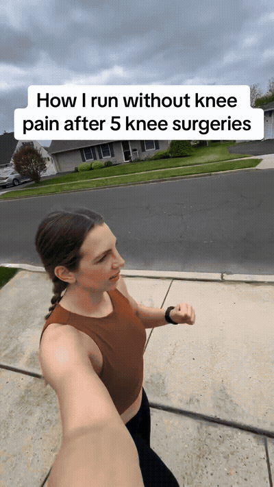
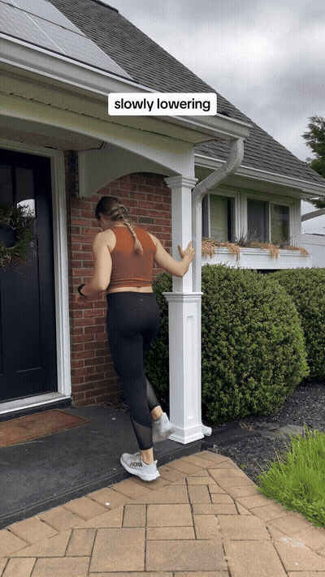
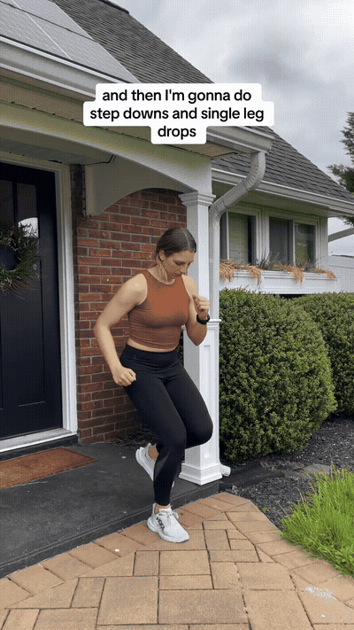
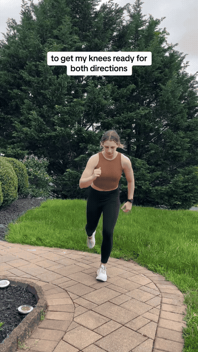
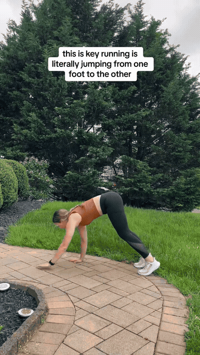
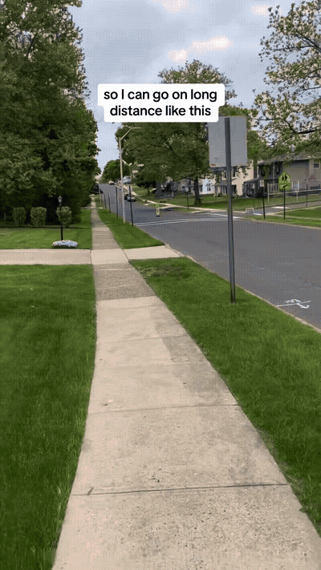

10.5–14.6s: Slowly lower on one foot and reach a stretch at the bottom

14.6–19.1s: Stretch the calf, then bias the soleus

19.1–26.8s: Work the shin muscles, then use step-downs and single-leg drops

26.8–34.4s: Internal/external hip rotation through full range, followed by forward and backward lunges

34.4–42.6s: Explosive movement, lateral lunges, and single-leg jumping; the creator frames running as repeated single-leg jumps

42.6–49.2s: Active hamstring, hip, and back stretching